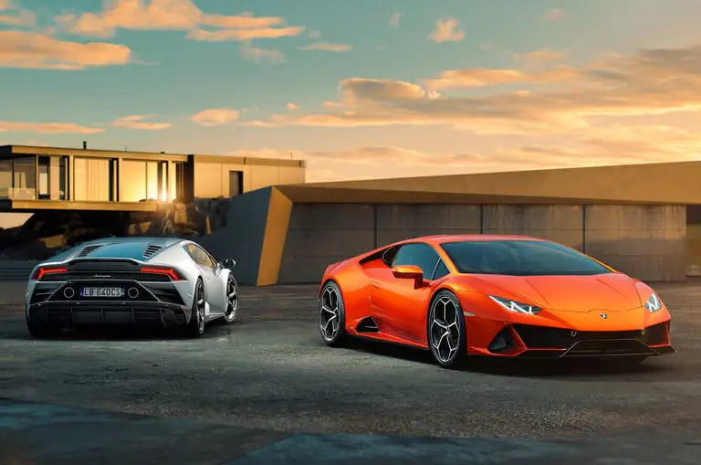

Un deportivo es, por lo general, un coche pequeño y bajo para dos pasajeros que ofrece una respuesta rápida, puede circular a altas velocidades y está diseñado para ser conducido en la vía pública. Suelen estar asociados a una carrocería coupé o descapotable, aunque hoy en día existen deportivos de todos los tamaños y formas y con espacio para más de dos pasajeros. Por el contrario, existen modelos que presenten una carrocería deportiva y están equipados con algunos aspectos comunes a los vehículos deportivos, pero esto no quiere decir que lo sean. Para que un coche se considere deportivo, debe contar con un tiempo reducido de aceleración, una velocidad máxima elevada, mejor sistema de frenada y más caballos de potencia que un automóvil regular.
